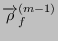
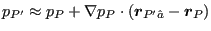

Next: Summary of the incompressible Up: Incompressible flow Previous: Convective terms Contents
For incompressible flow the mass flow as expressed by Equation (611) can be written as:
| (706) |
where  is a function of only. Therefore, the density is constant while treating the mass conservation equation. Using Equation (606) this can be further rewritten as:
In the next step Equation (605) is approximated by:
| (708) |
Notice that
in the
 -term was replaced
by
. This does not correspond to the SIMPLE algorithm, since
the term is not neglected, but also not quite corresponds to the SIMPLEC
algorithm, since
is used. Writing this equation for the
neighboring element E and taking the mean leads to:
-term was replaced
by
. This does not correspond to the SIMPLE algorithm, since
the term is not neglected, but also not quite corresponds to the SIMPLEC
algorithm, since
is used. Writing this equation for the
neighboring element E and taking the mean leads to:
| (709) |
in which the second order correction
 was used. Therefore
Equation (707) now reduces to:
was used. Therefore
Equation (707) now reduces to:
| (710) |
or, with the abbreviation :
| (711) |
If the velocity on the face is known the mass flow can be calculated directly. Therefore, Equation (621) now reads:
| (712) |
where stands for the faces on which the velocity is defined by the user. Notice that the unknown here is the pressure and not the correction to the pressure as in compressible flow.
The pressure gradient can be treated as in Equation (623). Alternatively, one can also write (Figure 160):
| (713) |
Since
| (714) |
and
|  | (715) |
one obtains:
 |
(716) |
If the pressure is known on the face, the expression reduces to:
| (717) |